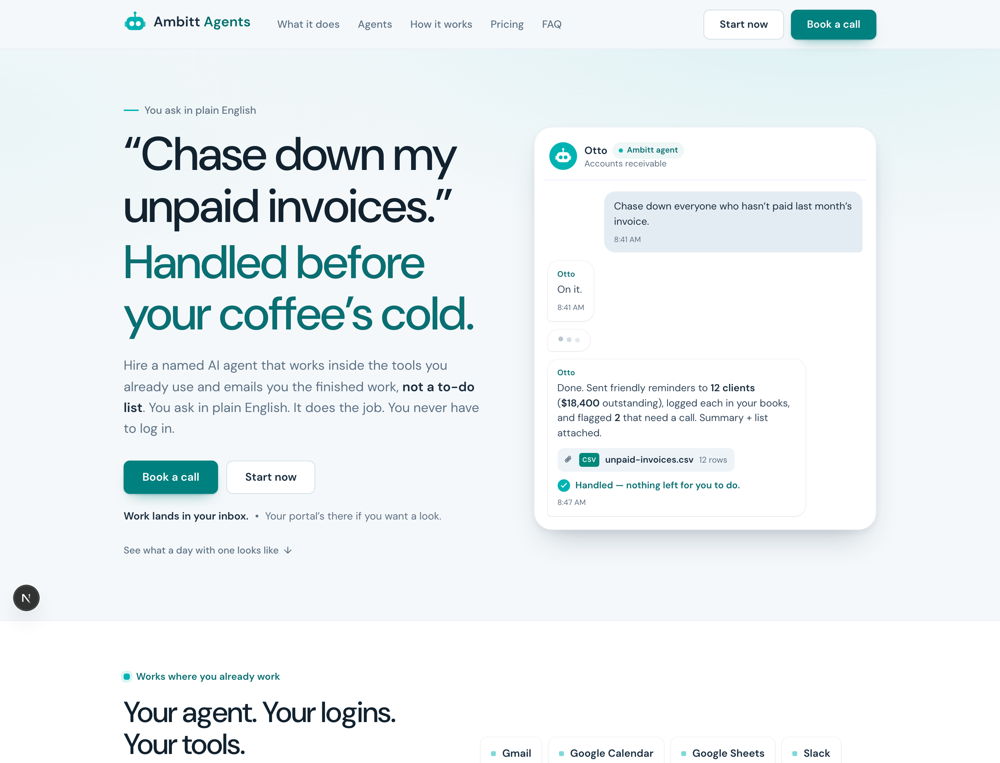
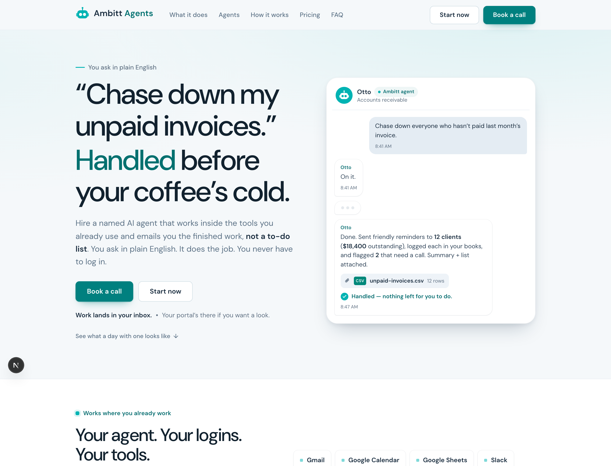

Website — hero
The whole argument for the change. The headline was Bricolage Grotesque 800 at -0.03em, leading 1.0; it is now DM Sans 500 at 110%, sized up 60 → 68px to buy back the presence lost to weight. Nothing was gained by shouting — the quiet version reads more expensive and the sub-head is easier to enter.
Website — hero, one-accent-word variant (needs your call)
The reference system says one accent word per headline, not a whole coloured line. Our hero is a call-and-response — the client's request in ink, the outcome in teal — so colouring the whole answer is a deliberate device, not the antipattern. Left is what I shipped (whole response teal). Right shows the strict rule: only “Handled” carries the accent. The strict version puts the brand on the single most important word instead of diffusing it across five. I did not ship the right-hand version — it changes the hero's meaning, not just its type, so it is your call.


Website — job section
Also fixes two things the font swap exposed: the attachment chip used to sit on its own line only because the old font happened to fill the last line — DM Sans is narrower, the chip slid up beside the word “attached.” It is now deterministically its own block. And the missing space in “Nadia· reply” (a Turbopack JSX whitespace bug) was there before and is now fixed.
Website — pricing
The 52px price figure is the one place negative tracking survives, because it is genuinely display size.
Client portal — home
Headings drop 600 → 500 and lose the old -0.011em tracking entirely: the portal's
largest heading is 30px, nowhere near the ~40px where tightening is a correction rather than a tic.
Hierarchy now comes from the size step and from --text vs --text-2.
Client portal — agent page
Watch the settings-row labels: at 15px there is no size left to spend, so those went up to 600
(.font-display-sm). That is the one place weight is allowed to increase, and it is why the
lighter display weight does not flatten the page.
Prospect onboarding form — this one was worse than a font swap
This surface was pulling Inter from the Google Fonts CDN via a render-blocking
@import in its own stylesheet — the only place in the product doing either. It is the first
page a prospect ever sees. That import is gone; the form now uses the same self-hosted DM Sans as
everything else. The 44px hero also came down from 700 at -1.5px tracking to 500 at -0.8px,
and the missing space in “Atlas— Ambitt” is fixed.
Operator dashboard — agents
Page titles were 24px/700. On a dark surface light-on-dark already blooms about half a weight step, so 700 was reading heavy twice over — they are now 24px/500. KPI numerals sit at 600, because figures have no ascender/descender silhouette and need slightly more weight than letters to hold the same presence. Mono is now DM Mono.
Operator dashboard — clients
Density is unchanged: 11px uppercase table labels keep their positive tracking, which is the correct adjustment at that size.
The scale I landed on
Three surfaces do not share a scale — a marketing hero, a client portal and a dense operator dashboard have different jobs. They share the family and the weight discipline.
| Surface / role | Was | Now | Why |
|---|---|---|---|
| Website h1 (hero) | 60px / 800 / -0.03em / lh 1.0 | 68px / 500 / -0.018em ≥900px / lh 1.1 | Size buys back what weight gave up |
| Website h2 (section) | 36–46px / 700–800 | 40–50px / 500 / lh 1.1 | Same trade, one step down |
| Website h3 | 18–21px / 700 | 18–21px / 600 / lh 1.25 | Under 20px, weight is the only lever left |
| Website body / lede | 17px / lh 1.62 | 17px / 400 / lh 1.6 | Unchanged in size |
| Website micro-labels | 9.5–13px / 700–800 | 9.5–13px / 600 | Nothing on the site is heavier than 600 now |
| Portal h1 | 23–30px / 600 / -0.011em | 23–30px / 500 / no tracking / lh 1.18 | Never reaches display size, so never tightens |
| Portal h2 / card titles | 20–28px / 600 | 20–28px / 500 | |
| Portal small headings | 15–19px / 500–600 | 15–19px / 600 (.font-display-sm) | Deliberate step up — stops hierarchy collapsing |
| Portal body / eyebrow | 15px / 11px caps | 15px 400 lh 1.55 / 11px 600 +0.08em | Positive tracking on caps is correct |
| Dashboard h1 | 24px / 700 | 24px / 500 / lh 1.15 | Dark-mode bloom already adds weight |
| Dashboard h2 (section) | 15px / 600 | 15px / 600 / lh 1.25 | Unchanged — already correct for its size |
| Dashboard KPI numerals | 30px / 700 | 30px / 600 + tabular | Figures need a touch more than letters |
| Dashboard table labels | 11px caps tracking-wider | unchanged | Positive tracking, correct at 11px |
| Mono (portal + dashboard) | Geist Mono | DM Mono 400 | Same foundry family as the sans |
Licence — cleared. DM Sans and DM Mono are SIL Open Font License 1.1. The OFL grants permission
to “use, study, copy, merge, embed, modify, redistribute” including in commercial products;
the only conditions are that the fonts are not sold on their own, that the copyright notice and licence ship
with them, and that a modified font may not reuse the reserved name. We ship them unmodified, so the
full licence text sits next to the files at <app>/public/fonts/DM-Sans-OFL.txt and
DM-Mono-OFL.txt. Self-hosting is explicitly permitted.
Self-hosted, no CDN. next/font/local in all three apps, files in public/fonts/.
One 62 kB variable file carries both axes (optical size 9–40, weight 100–1000), so
font-optical-sizing: auto gives the 68px hero a real display cut and 11px labels a text cut —
and it is smaller than the three static weights it replaces. latin-ext is a separate 31 kB file behind a
unicode-range, so it only downloads when a client or agent name actually needs it.
One thing for your eye.
The website's teal tokens are near-misses of the canonical values —
--brand-ink #0a6f72 vs the canonical #00706f, and
--brand-strong #00807f vs #00807e. I did not re-theme them: shifting colour
during a font review makes the before/after unreadable, and the portal's teal pass was landing in parallel.
Worth a follow-up so the website matches the portal and the emails exactly.
I did fix the one that was an actual failure: the nav wordmark set “Agents” in the
mark-only #00b3b3 at 2.43:1 — live text in a colour that is decoration-only.
It now uses the text step #00706f, the same call the portal brand-mark already made.